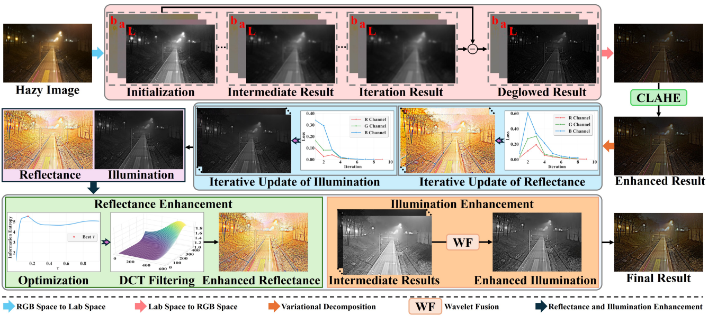
Real-World Nighttime Image Dehazing via Bayesian-Based Fractional-Order Variational Model
Yun Liu, T. Li, Z. Zhou, W. Ren, W. Lin
IEEE Transactions on Image Processing (T-IP). 2026, 35: 4673-4685
(CCF-A)
Associate Professor
College of Artificial Intelligence, Southwest University
Chongqing 400715, China
Yun Liu (刘 运) is currently an Associate Professor with the College of Artificial Intelligence, Southwest University. From 2024 to 2025, he was supported by China Scholarship Council and as a Postdoctoral Research Fellow with the College of Computing and Data Science, Nanyang Technological University, Singapore, under the supervision of Prof. Weisi Lin (IEEE Fellow). He received his Ph.D. degree in computer science and technology from Sichuan University, China, in 2019. His current interests include image processing, computer vision and deep learning, mainly focusing on low-level computer vision tasks.

Real-World Nighttime Image Dehazing via Bayesian-Based Fractional-Order Variational Model
Yun Liu, T. Li, Z. Zhou, W. Ren, W. Lin
IEEE Transactions on Image Processing (T-IP). 2026, 35: 4673-4685
(CCF-A)
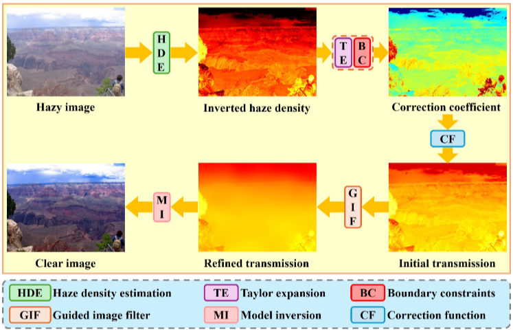
IHDCP: Single Image Dehazing Using Inverted Haze Density Correction Prior
Yun Liu, T. Li, C. Tan, W. Ren, C. Ancuti, W. Lin
IEEE Transactions on Image Processing (T-IP). 2026, 35: 1448-1461
(CCF-A, ESI Highly Cited Paper)
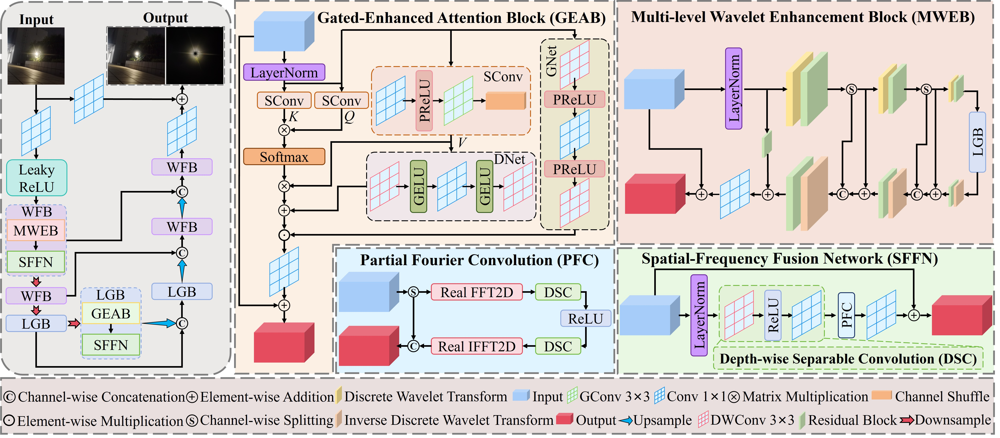
Nighttime Flare Removal via Wavelet-Guided and Gated-Enhanced Spatial-Frequency Fusion Network
Yun Liu, G. Yang, T. Li, W. Lin
Proceedings of the 40th Annual AAAI Conference on Artificial Intelligence (AAAI). 2026
(CCF-A Oral)
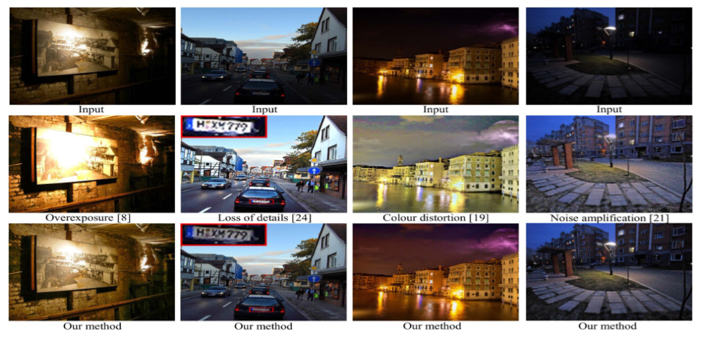
Low-Light Image Enhancement Using a Retinex-based Variational Model with Weighted Lp Norm Constraint
E. Hu, Yun Liu*, A. Wang, B. Shiri, W. Ren, W. Lin
IEEE Transactions on Multimedia (T-MM). 2026, 28: 152-166
(CCF-A, Corresponding author)
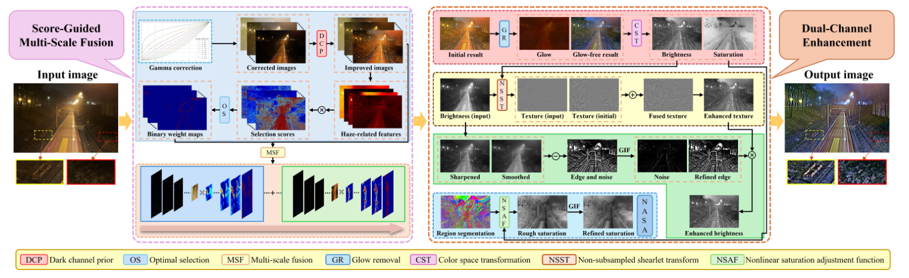
Real-World Nighttime Dehazing via Score-Guided Multi-Scale Fusion and Dual-Channel Enhancement
T. Li, Yun Liu*, S. Luo, W. Ren, W. Lin
IEEE Transactions on Circuits and Systems for Video Technology (T-CSVT). 2026, 36(3): 3306-3319
(CCF-B, Corresponding author, ESI Highly Cited Paper)
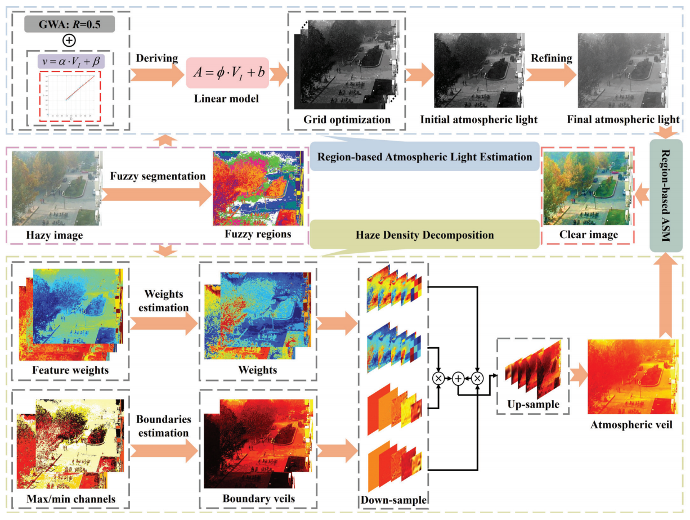
Single Image Dehazing Using Fuzzy Region Segmentation and Haze Density Decomposition
T. Li, Yun Liu*, W. Ren, B. Shiri, W. Lin
IEEE Transactions on Circuits and Systems for Video Technology (T-CSVT). 2025, 35(10): 9964-9978
(CCF-B, Corresponding author)
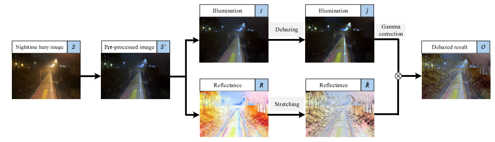
VNDHR: Variational Single Nighttime Image Dehazing for Enhancing Visibility in Intelligent Transportation Systems via Hybrid Regularization
Yun Liu, X. Wang, E. Hu, A. Wang, B. Shiri, W. Lin
IEEE Transactions on Intelligent Transportation Systems (T-ITS). 2025, 26(7): 10189-10203
(CCF-B, ESI Hot Paper)
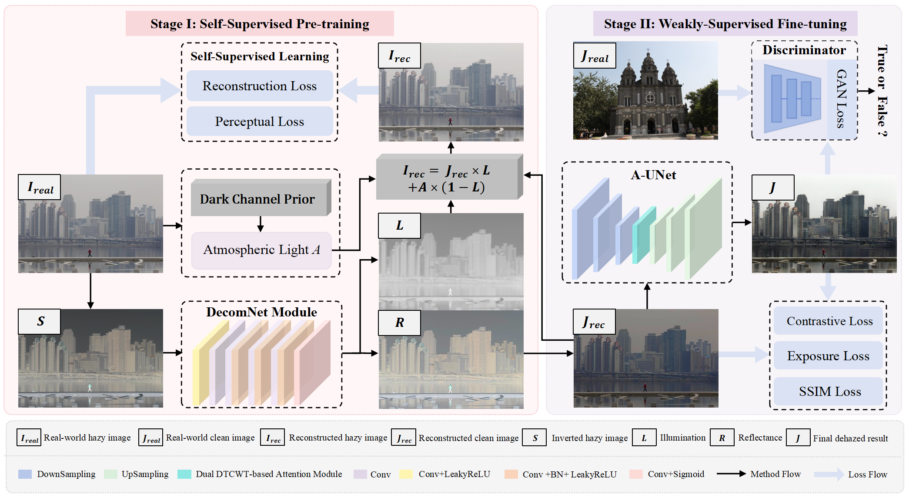
Dehaze-RetinexGAN: Real-World Image Dehazing via Retinex-based Generative Adversarial Network
X. Wang, G. Yang, T. Ye, Yun Liu*
Proceedings of the 39th Annual AAAI Conference on Artificial Intelligence (AAAI). 2025, 39(8): 7997-8005
(CCF-A Oral, Corresponding author)
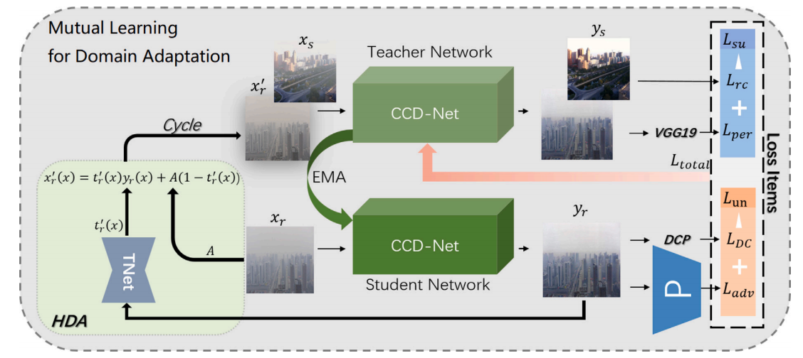
Mutual learning for domain adaptation: Self-distillation image dehazing network with sample-cycle
E. Chen, L. Tong, T. Ye, S. Chen, Y. Zhang, Yun Liu*
Displays. 2025, 87: 102904
(JCR-2, Corresponding author)
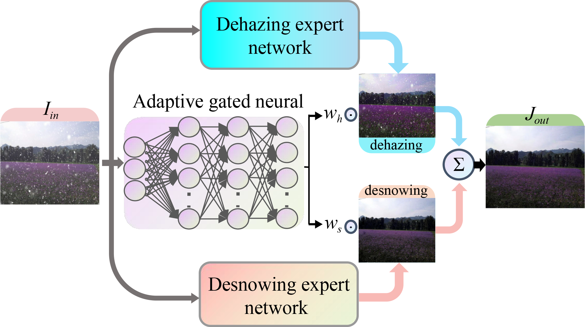
Degradation-Adaptive Neural Network for Jointly Single Image Dehazing and Desnowing
E. Chen, S. Chen, T. Ye, Yun Liu*
Frontiers of Computer Science. 2024, 18(2): 182707
(CCF-B, Corresponding author)
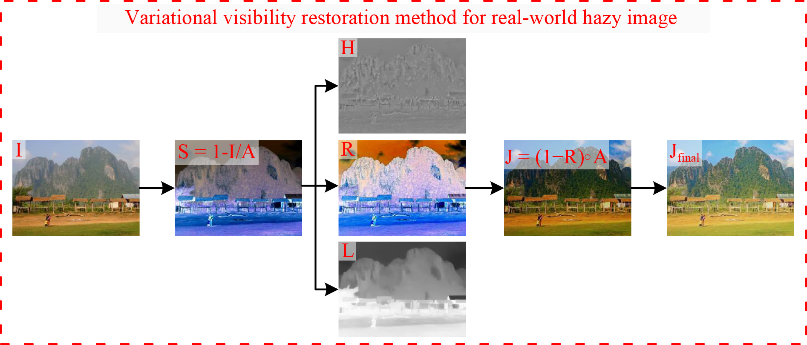
Visibility Restoration for Real-world Hazy Images via Improved Physical Model and Gaussian Total Variation
C. Li, E. Hu, X. Zhang, H. Zhou, H. Xiong, Yun Liu*
Frontiers of Computer Science. 2024, 18(1): 181708
(CCF-B, Corresponding author)
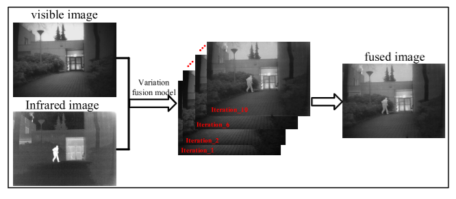
Infrared and visible image fusion via hybrid variational model
Z. Xia, Yun Liu*, X. Wang, F. Zhang, R. Chen, W. Jiang
IEICE Transactions on Information and Systems. 2024, E107-D(4): 569-573
(JCR-4, Corresponding author)
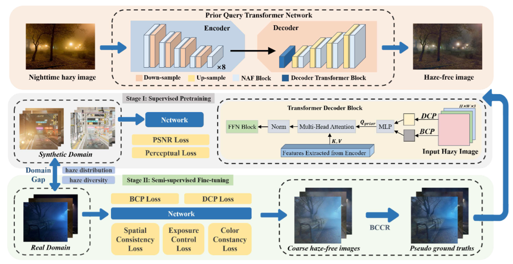
NightHazeFormer: Single Nighttime Haze Removal Using Prior Query Transformer
Yun Liu, Z. Yan, S. Chen, T. Ye, W. Ren, E. Chen
Proceedings of the 31st ACM International Conference on Multimedia (ACM MM '23). 2023: 4119-4128
(CCF-A, Google Scholar citations: 140+)
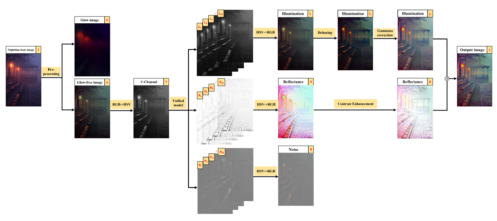
Multi-purpose Oriented Single Nighttime Image Haze Removal Based on Unified Variational Retinex Model
Yun Liu, Z. Yan, J. Tan, Y. Li
IEEE Transactions on Circuits and Systems for Video Technology (T-CSVT). 2023, 33(4): 1643-1657
(CCF-B, ESI Hot Paper)
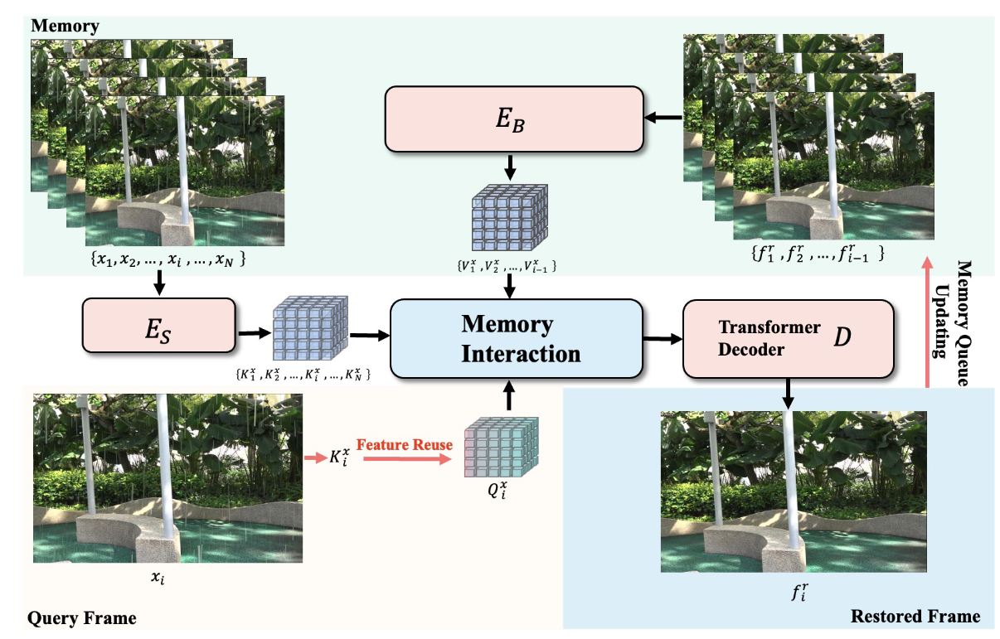
Sequential Affinity Learning for Video Restoration
T. Ye, S. Chen, Yun Liu*, W. Chai, J. Bai, W. Zou, Y. Zhang, M. Jiang, E. Chen, C. Xue
Proceedings of the 31st ACM International Conference on Multimedia (ACM MM '23). 2023: 4147-4156
(CCF-A, Corresponding author)
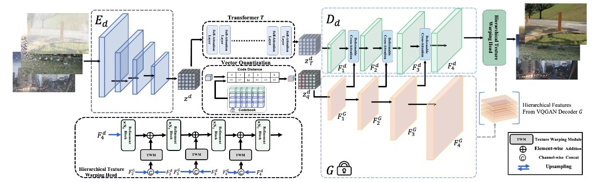
Adverse Weather Removal with Codebook Priors
T. Ye, S. Chen, J. Bai, J. Shi, C. Xue, J. Jiang, J. Yin, E. Chen, Yun Liu*
Proceedings of the IEEE/CVF International Conference on Computer Vision (ICCV). 2023: 12653-12664
(CCF-A, Corresponding author, Google Scholar citations: 100+)
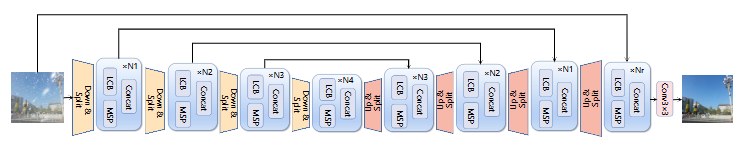
MSP-former: Multi-scale Projection Transformer for Single Image Desnowing
S. Chen#, T. Ye#, Yun Liu#, T. Liao, J. Jiang, E. Chen, P. Chen
Proceedings of the IEEE International Conference on Acoustics, Speech and Signal Processing (ICASSP). 2023: 1-5
(CCF-B, co-first author, Google Scholar citations: 100+)
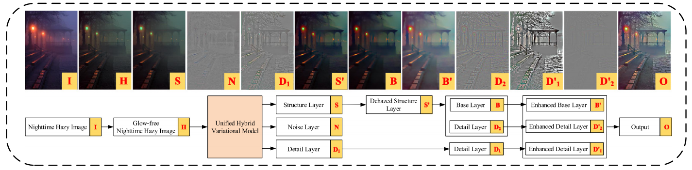
Single Nighttime Image Dehazing Based on Unified Variational Decomposition Model and Multi-Scale Contrast Enhancement
Yun Liu, Z. Yan, T. Ye, A. Wu, Y. Li
Engineering Applications of Artificial Intelligence. 2022, 116: 105373
(CCF-C, JCR-1)
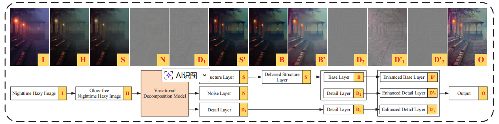
Nighttime Image Dehazing Based on Variational Decomposition Model
Yun Liu, Z. Yan, A. Wu, T. Ye, Y. Li
Proceedings of the IEEE/CVF Conference on Computer Vision and Pattern Recognition (CVPR) Workshops. 2022: 640-649
(CCF-A Workshop)
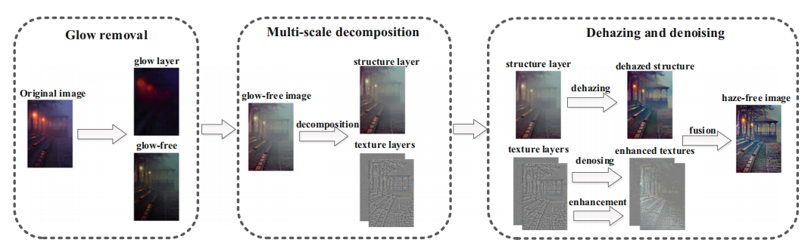
Joint Dehazing and Denoising for Single Nighttime Image via Multi-scale Decomposition
Yun Liu, P. Jia, H. Zhou, A. Wang
Multimedia Tools and Applications. 2022, 81, 23941-23962
(CCF-C, JCR-2)
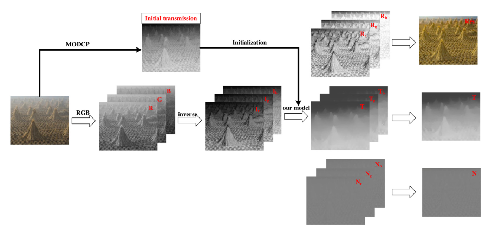
A Unified Weighted Variational Model for Simultaneously Haze Removal and Noise Suppression of Hazy Images
H. Zhou, Z. Zhao, H. Xiong, Yun Liu*
Displays. 2022, 72, 102137
(JCR-1, Corresponding author)
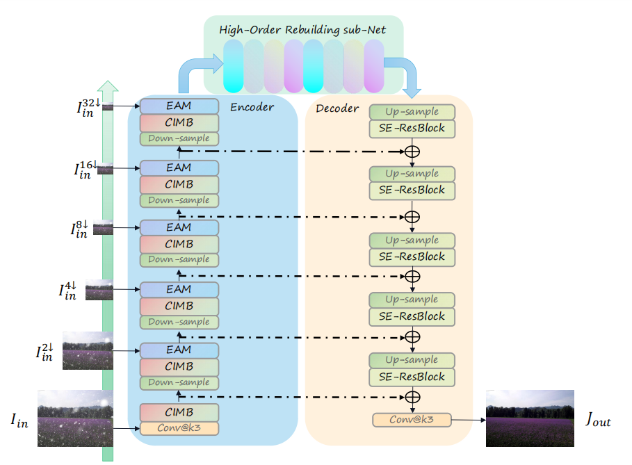
Towards Real-time High-definition Image Snow Removal: Efficient pyramid network with asymmetrical encoder-decoder architecture
T. Ye#, S. Chen#, Yun Liu#, Y. Ye, J. Bai, E. Chen
Proceedings of the Asian Conference on Computer Vision (ACCV). 2022: 366-381
(CCF-C, co-first author)
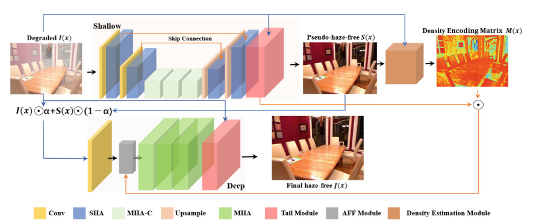
Perceiving and modeling density for image dehazing
T. Ye, Y. Zhang, M. Jiang, L. Chen, Yun Liu, S. Chen, E. Chen
Proceedings of the European Conference on Computer Vision (ECCV). 2022: 130-145
(CCF-B, Google Scholar citations: 200+)
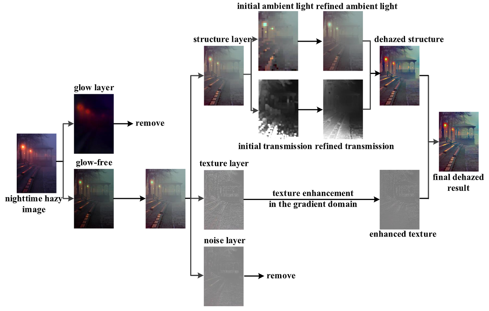
Single Nighttime Image Dehazing Based on Image Decomposition
Yun Liu, A. Wang, H. Zhou, P. Jia
Signal Processing. 2021, 183, 107886
(CCF-C, JCR-2)
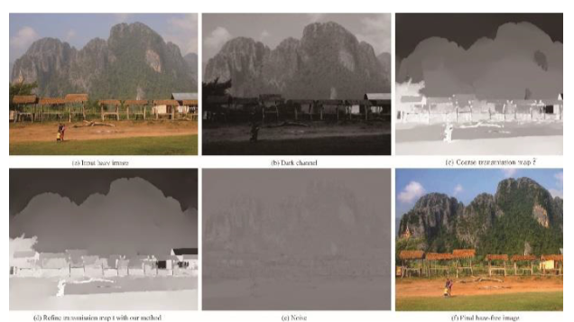
Single image dehazing based on weighted variational regularized model
H. Zhou, H. Xiong, C. Li, W. Jiang, K. Lu, N. Chen, Yun Liu*
IEICE Transactions on Information and Systems. 2021, E104-D(7): 961-969
(JCR-4, Corresponding author)
CVPR, ECCV, ICCV, NeurIPS, AAAI, ACM MM, ACCV, ICASSP, WACV, CCBR, ICIP, ICPR, ChinaMM, etc.
IEEE T-PAMI, IEEE T-IP, IEEE T-MM, IEEE T-CSVT, IEEE T-NNLS, IEEE T-IFS, IEEE T-ITS, IEEE T-GRS, IEEE T-FS, IEEE T-ASE, IEEE T-ETCI, IEEE T-CE, IEEE T-AI, IEEE SPL, KBS, ESWA, EAAI, PR, Information Fusion, etc.
Welcome students with relevant backgrounds (e.g., computer vision, deep learning, etc.) who are interested in joining our lab. Please feel free to contact me via email (yunliu@swu.edu.cn).